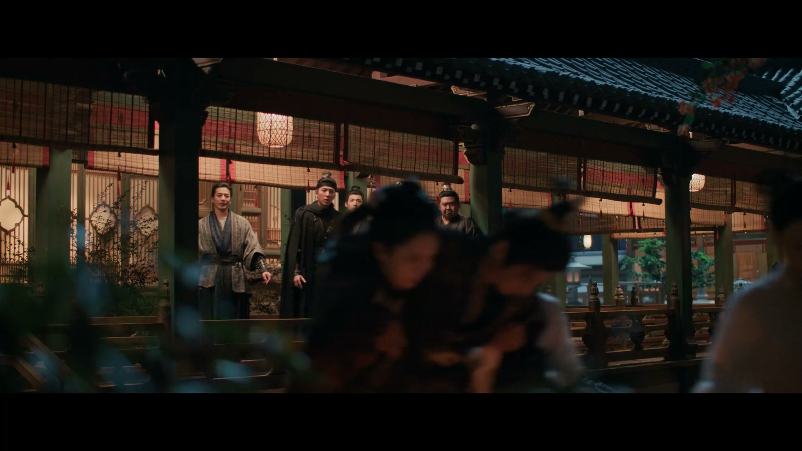
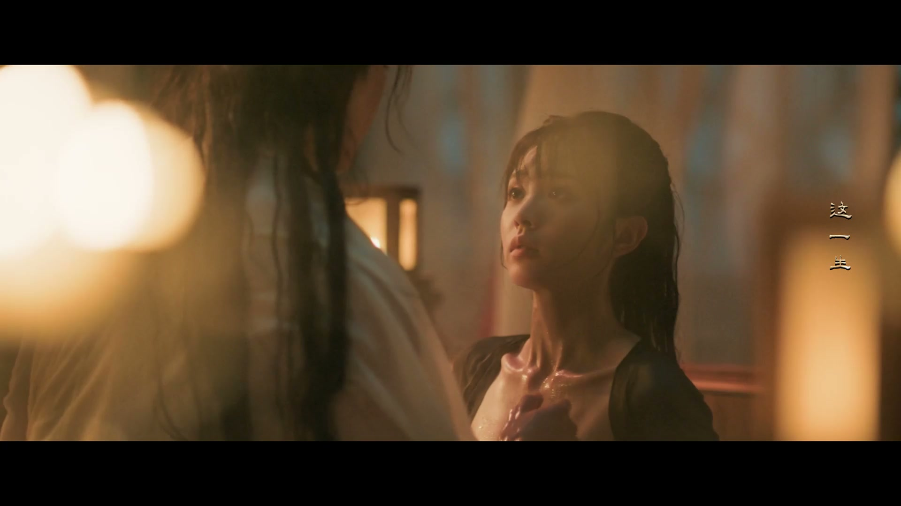
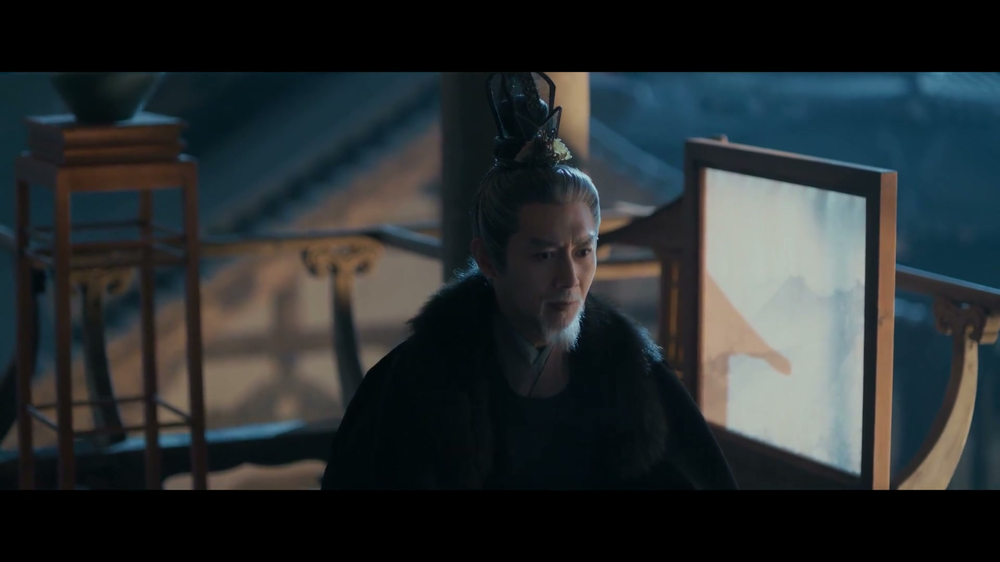
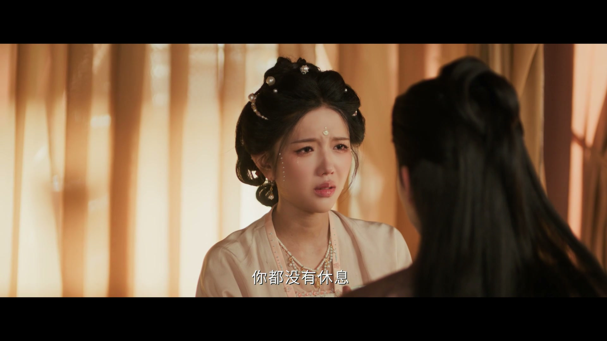
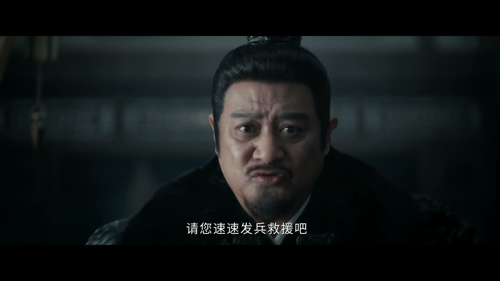
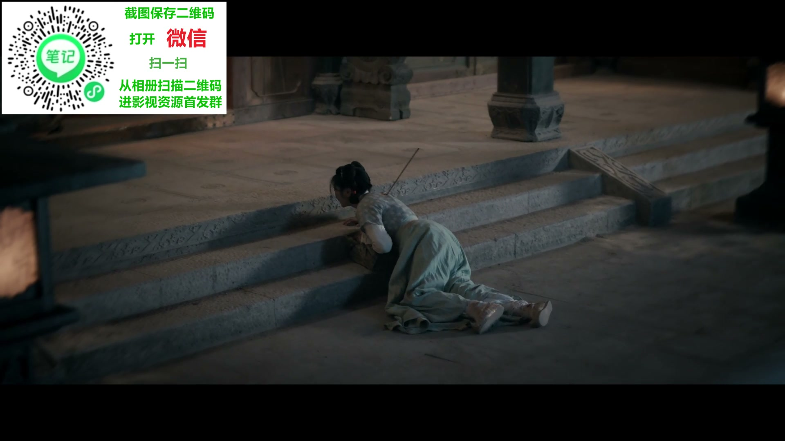
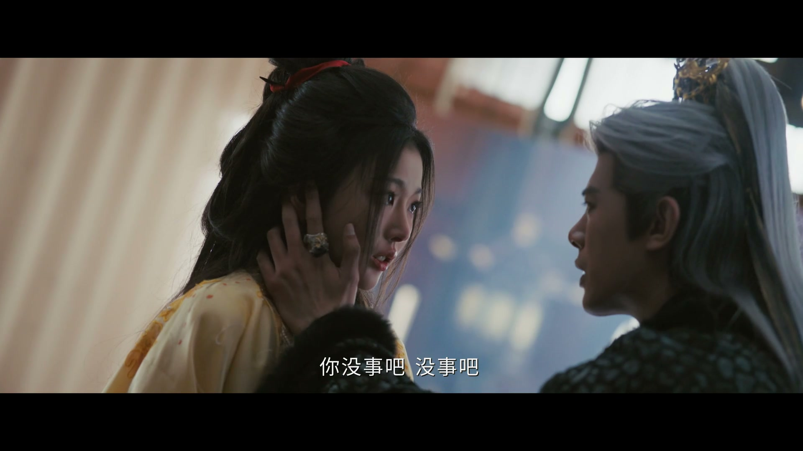
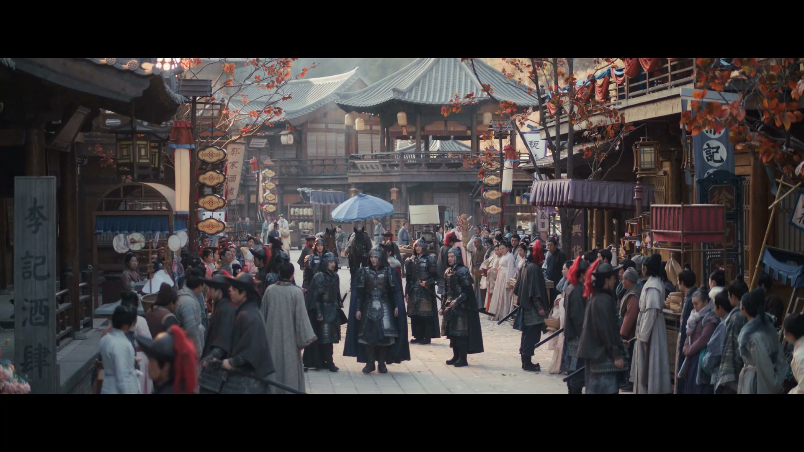
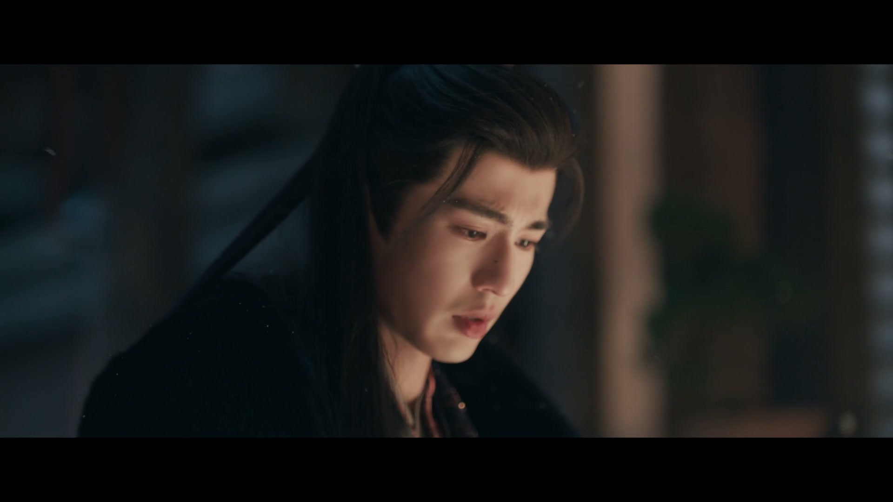
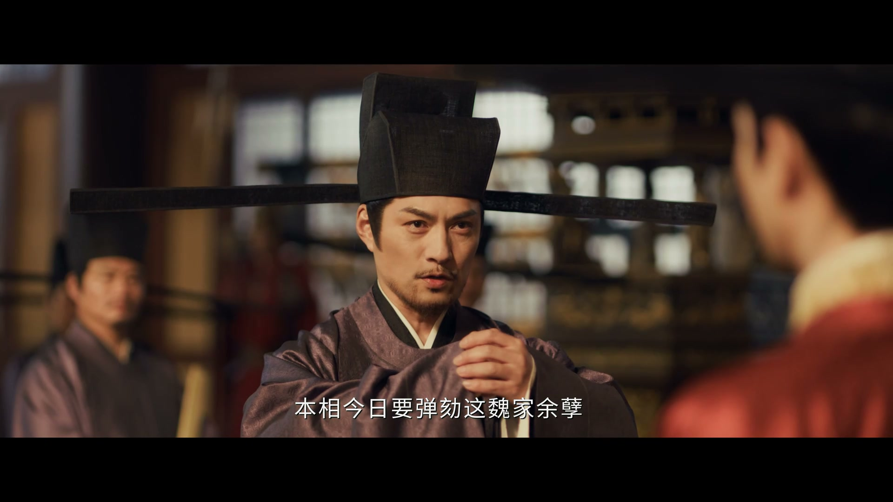

拼命之外，要留点生活
情境：重伤卧床的谢征被部下「催着」懂点生活，一场寻医闹剧冲淡了生死之危。
遇到这种情况，可以这样做
- 越是在生死线上，越要给自己留一丝人间烟火。
- 把日子过成只剩打仗，赢了天下也丢了人。
- 轻松不是不上心，是不被恐惧压垮的底气。

Drama Recap · 剧情图文总结
第 38 集 · 金殿雪冤
火海中救回谢征的樊长玉，收到皇姑送来的求援虎符，也迎来铺天盖地的谣言——她是罪臣之女。她选择游街示众、击登闻鼓、金殿对质，凭虎符与舒妃遗信扳倒魏严，十七年景州冤案沉冤昭雪，成德太子之后归位。
第 38 集，决战之后是审判。火海中救回丈夫的樊长玉，收到皇姑送来的求援虎符，也等来了满城谣言——她是罪臣之女。她没有躲，游街示众、击登闻鼓、金殿对质，把十七年前景州十万将士的冤魂一字一句摊开在龙椅前。当舒妃的求救信被当朝亮出，贼喊捉贼的魏严终于伏法，成德太子之后归位——沉冤昭雪，尘埃落定。
本集开场，谢征重伤，在将军府养伤。部将们急得四处寻医，他躺在榻上却还有心思打趣：老打仗的人，也得懂点生活。太医被请上门，人还没看脉，就被他一句「你是太医还是我是太医」打发走了。 长信王与太傅密谈：皇帝挨了皇姑一记耳光，皇姑还给那「杀猪女」送去一份大礼——她心心念念的求援虎符。长信王冷笑，这虎符一到，魏严定会开心，武安侯与齐旻合作的可能也被隔断，"此乃前菜，大戏还在后头"。
剧里的鸡毛蒜皮，往往是人生的缩影。这些情节不只是故事——当你在现实中遇到同样的处境时，它们能提醒你：先做什么、别做什么、怎么说才有效。
情境：重伤卧床的谢征被部下「催着」懂点生活，一场寻医闹剧冲淡了生死之危。
情境：谢征承诺安定后补办婚礼，长玉却只惦记为父洗冤、回家过平淡日子。
情境：火海余生，长玉第一次把「以后不管发生什么我都陪着你」说出了口。
情境：十三娘握着虎符想为隋元卿报仇，最终明白「世间恩怨多为因果」，把虎符交了出去。
情境：谣言满城，长玉选择游街击鼓，把「罪臣之女」四个字摊开在天下人面前。
情境：长玉当殿反问「最后的受惠之人是谁」，把矛头直指魏严；长公主再以舒妃之信钉死罪证。

谢征重伤被送回将军府，众部将急得团团转，要去找大夫。他躺在榻上还有心思打趣："我发现你，你就不能老打仗，你得懂点生活。"旁人都劝不动，他倒先让人冷静下来。
太医被请上门，人还没把脉，谢征一句「你是太医，还是我是太医啊」把人噎了回去，又说「我都说了，这种事不用找大夫」，让太医白跑一趟。生死关头的一场闹剧，把两人劫后重逢的松弛写在了脸上。
关键台词 · KEY QUOTES

长信王府中，太傅与他谈起今日局势：皇帝挨了皇姑一记耳光，皇姑还给那「杀猪女」备了份大礼。长信王不怒反笑，魏严要是知道了，一定会很开心——他想要的，正是隔断武安侯与齐旻合作的可能。
太傅问是何物，长信王答：正是樊长玉心心念念的虎符，当年西北调兵的虎符。他说这只是前菜，大戏还在后头，一副坐山观虎斗的算计神色。
关键台词 · KEY QUOTES
长玉梦回童年：小小的她摘了满满一捧桂花，娘亲夸她真棒，说要给她做桂花糖。梦里娘亲温柔地叮嘱，如今身边能有相知相守之人，娘就放心了，还让她别忘了娘最爱吃的桂花糕。
醒来后，谢征郑重许诺，等安定下来定给她补一场婚礼。长玉却只说，进京这一路一波未平一波又起，她只想赶紧为爹洗清冤屈，回李安平平淡淡地过日子。可昨夜之事恐怕没那么简单——谢征让她放心，说自己已有对策。
关键台词 · KEY QUOTES

谢征伤重苏醒，长玉守了一夜。他心有余悸：昨夜那场大火，她为了救他冲进火海，他真怕她死在里头。长玉安慰他「我这不是在你身边吗」，要给他看伤，他却虚弱得说不动话。
长玉按住他，一字一句地说：以前她总是畏畏缩缩，但这一次她想告诉他——以后不管发生什么，她都会陪在他身边，而且只能由她来照顾他。劫后余生，她终于把爱说出了口。
关键台词 · KEY QUOTES

画面闪回十七年前的景州之战。成德太子与谢将军困守孤城，求援的虎符送到长信王面前，却只换来一句「这虎符合不上，是假的」。将官急得跪地恳求，看在江山社稷和万千百姓的份上，请他速速发兵救援。
长信王始终不为所动。求援虎符被扣下，景州城破，数十万将士血染沙场——这正是十七年后那场惊天冤案的起点，也是长玉父亲背负骂名的开端。
关键台词 · KEY QUOTES

长玉在府中醒来，一封长公主的书信与一对求援虎符已经摆在案上。部将报：昨夜有一名送信丫鬟死在将军府门口，她拼死护住的正是这对虎符。长玉下令四下搜索可疑之人，心里却隐隐觉得，这是冥冥之中老天爷要替父亲讨回公道。
门外又有人来报：一个叫十三娘的人求见。长玉让众人退下，要单独会她。她心里清楚，自己与十三娘之间，隔着清风寨的血债——来者不善。
关键台词 · KEY QUOTES

长信王府内却是一片阴森。他正与身边女子争执，女子决意离开，他冷笑："我马上就要当皇帝了。没了我，你将不是皇后，你什么都不是！"女子回敬："我根本不屑当什么皇后，没有你，我会活得更好！"
争执到后来，长信王又软下语气苦苦哀求，可女子只求永远离开。他撕下伪装，用金刚锁链将她锁住——若要逃，就得砍断其中一人的一只手。"你逃不了，这辈子你都只属于我。"野心与占有欲，把他逼成了另一副模样。
关键台词 · KEY QUOTES
十三娘开门见山：她要替隋元卿报仇，如今只剩她一个人还记得这件事。可她终究没有拔刀——隋元卿临终把求援虎符托付给她，让她交给樊长玉，换她一份逃民状、一条活路。
十三娘把这些年压在心底的话说出来：她曾把长玉和谢征当作仇人，恨谢征剿了清风寨，可到了今日她才发觉，世间恩怨多为因果，仇是报不尽的，杀来杀去也是无尽。虎符交出，恩怨一笔勾销。
长玉收下虎符，许她新的路引，从此自由，算是报了当年宁娘的恩情。但她与十三娘的恩怨并未就此了结——待她回京之后，再作清算。分别时，她只盼十三娘好好活着。
关键台词 · KEY QUOTES
长玉与谢征彻夜分析：仅凭一对虎符，还证明不了父亲清白，始作俑者是魏严，知情的人早已被灭口。宫中传言舒妃与魏严有染，舒妃的旧侍女又死在大火里。谢征想到齐旻，可他当了数十年傀儡，对魏严恐惧入骨，恐怕不敢开口。
长公主却冷笑，她叫了魏严二十多年舅舅，他的秉性她清楚得很，只怕他已经起疑了。谢征于是下决心：既然走到这一步，不如提前行动，即刻调兵回京。而长信王这边，也终于亮出「后手」——传令下去，把樊长玉是罪臣之女的消息散播出去，越快越好。
关键台词 · KEY QUOTES

朝中传下规矩：簪花将军擅动登闻鼓，须先游街示众，听凭万民指摘，方得击鼓鸣冤。长玉踏上游街路，群情激愤，烂菜石子砸向她，众人骂她是大奸臣之女。妹妹长宁冲上来护着她："我阿姊是清白的！"
长玉跪地叩拜父母在天之灵，起身高喊："我爹是魏麒麟，但他不是奸臣，他是被冤枉的！"她反诘众人："你们所有人有亲眼所见吗？你们所闻所见，就是事情的真相吗？"
走出人群时，长玉说剩下的路自己走。谢征的部将想拦，谢征一句「让她去吧」。她一步步走到登闻鼓前，敲响巨鼓，自报家门，声音响彻皇城："若所言有假，便是欺君，立斩不赦！"
关键台词 · KEY QUOTES

上朝之前，长玉望着娘亲手做的桂花糕，想起娘最爱吃的就是它。而长公主齐姝这边，重读着亡母留下的遗书：母亲当年泣血写下，兄长半途反悔，害得景州失守，凌山之死也是兄长一手造成；她身不由己，或许只有一死才能平息纷争，也愿以此唤醒兄长的良知，为女儿留一条生路。
长公主含泪道："孩儿不肖，这么晚才明白你的良苦用心。"她擦干眼泪走进朝堂，直逼龙椅上的皇帝——你涉嫌陷害谢征、还烧伤我性命的账，我还没跟你算；你若能拿出帝王的气势为长玉做主洗冤，我便与你一笔勾销。
关键台词 · KEY QUOTES

皇帝被迫升朝。长玉跪在殿前："十七年前的景州冤案，我父蒙冤被陷害。今日我樊长玉愿赌上性命，恳请天子主持公道，伸张正义！"她亮出求援虎符：这是魏麒麟当年去景州求援的虎符，长信王却称其伪造、拒不出兵，才酿成景州惨案。
魏严当朝否认："此乃假物，简直恬不知耻！"他自称当年惨案唯一在场的只有他一人，又抬出贺敬元的亲笔信，指认长玉是「魏麒麟之女魏长玉」，当朝弹劾她死罪。
长玉不慌不忙反将一军：若父亲真是恶人，魏相亲信贺敬元为何与他书信往来、欲除她姐妹性命？"我父亲真成了大奸臣，那最后的受惠之人是谁？"殿上群臣一时哑然。谢征亦挺身而出，言此案关乎成德太子及十万英魂，若重启调查，臣岂能缺席。
长公主终于亮出杀手锏——当年舒妃写给魏严的求救信：魏严为一己私情擅自中途回京，抛景州将士于阵前，酿成大错。"贼喊捉贼！魏严，你才是景州之战最大的叛贼！"宫门之外，谢家军已至，宫门不攻自破。魏严伏法，长信王在劫难逃。
尘埃落定。殿上众人拥立成德太子之后归位——"民心所向，群臣所愿。十七年了，终于又回到了这个地方。"长玉与谢征并肩立于阶前，天光破云。
关键台词 · KEY QUOTES
火海救夫、梦母立志；以罪臣之女之身游街击鼓、金殿对质，亮出求援虎符，一句「最后的受惠之人是谁」问住满朝文武，终为父洗冤。
重伤初愈仍谈笑自若，一句「让她去吧」放长玉上殿；决意提前行动、调兵回京，金殿以「成德太子及十万英魂」请命，宫门不攻自破。
游街示众时冲入人群护姐，高喊「我阿姊是清白的」，是全剧最暖的一处软肋。
重读亡母遗书，逼皇帝上朝做主；当朝亮出舒妃写给魏严的求救信，一句「贼喊捉贼」终结十七年旧案。
本欲替隋元卿报仇，最终顿悟恩怨因果，将求援虎符亲手交给长玉，换来一纸自由。
与太傅密谋「大戏还在后头」，以金刚锁链困住身边女子；下令散播长玉身世谣言，机关算尽。
金殿指虎符为假、抬出贺敬元书信揭长玉身份，却在舒妃求救信前「贼喊捉贼」，当朝败露。
长玉一字一句说出「以后不管发生什么，我都会陪在你身边」，把畏缩了大半生的心里话在劫后余生讲给谢征听。
游街示众、万民指摘中，长玉高喊「若所言有假，便是欺君，立斩不赦」，一人一鼓，震响皇城。
「此乃魏麒麟当年去景州求援之虎符！」一物既出，十七年前被称作「伪造」的调兵凭证重见天日。
长公主当朝翻出十七年前的旧信：「魏严为一己私情，抛景州将士于阵前」——贼喊捉贼，一朝现形。
「十七年了，终于又回到了这个地方。」成德太子之后登殿，十万英魂终于等来迟到的清明。
他当朝仍是「本相」，景州案十万将士的家属、军中怨气如何清算，恐怕还需一战才能彻底了结。
他散播谣言、困锁王妃、觊觎帝位，新帝归位之后，这棵毒瘤必有一场硬仗要打。
「定会给你补一场婚礼」的承诺还在，山河未定，谢征与长玉能否等来安稳的洞房花烛？
长玉说「你我恩怨，待我回京之后再了结」，如今她得了自由，这句未竟之约或将在终局兑现。
宫中传言的「有染」只是冰山一角，舒妃之死的真相，或许还藏着更多隐秘。